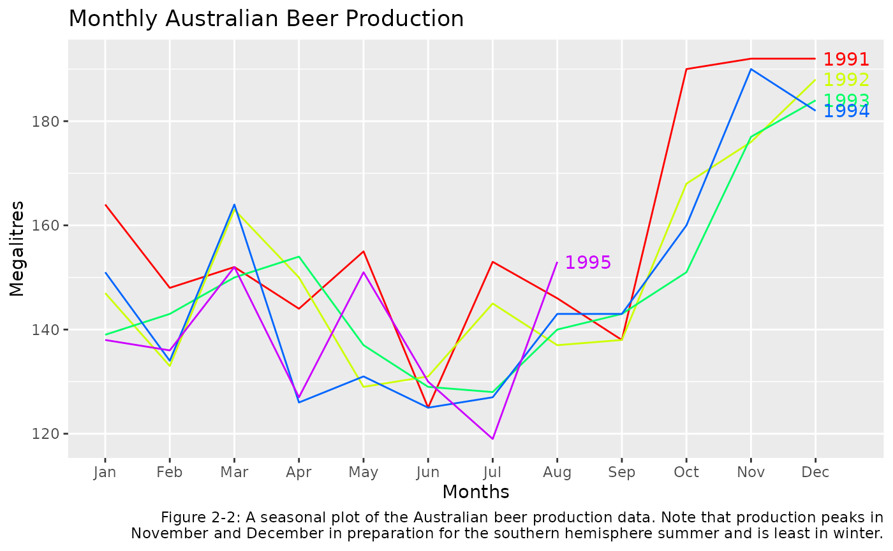
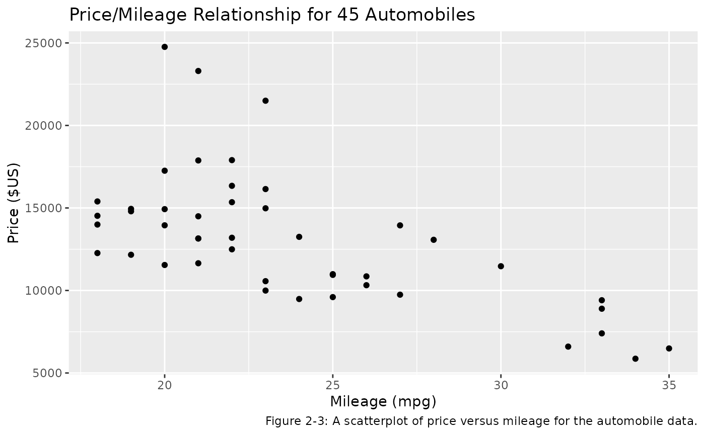
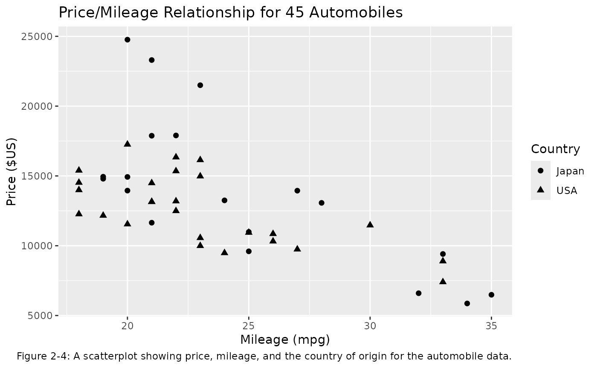
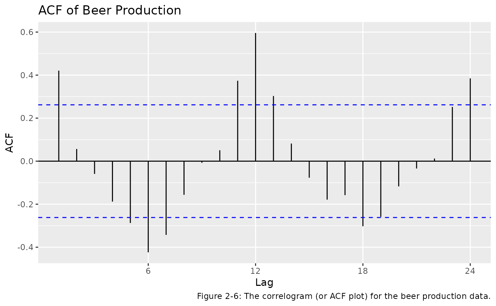
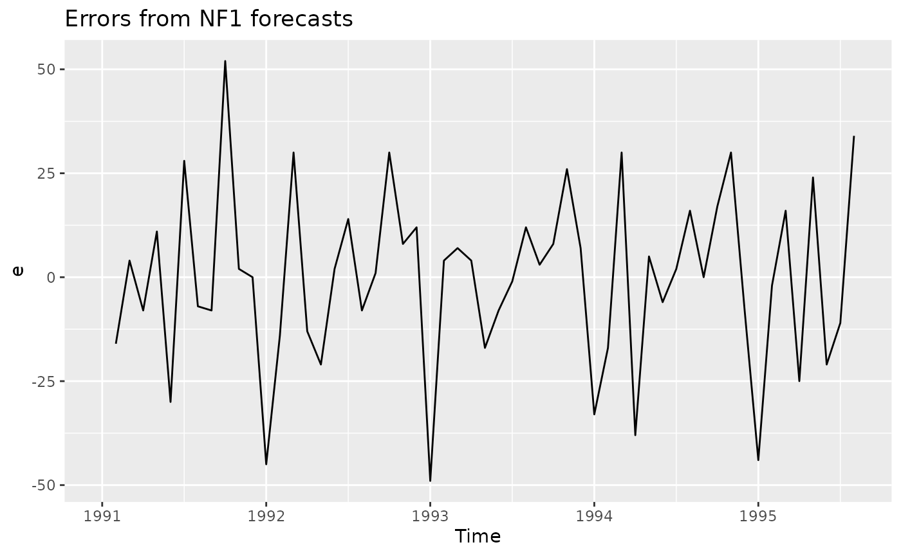
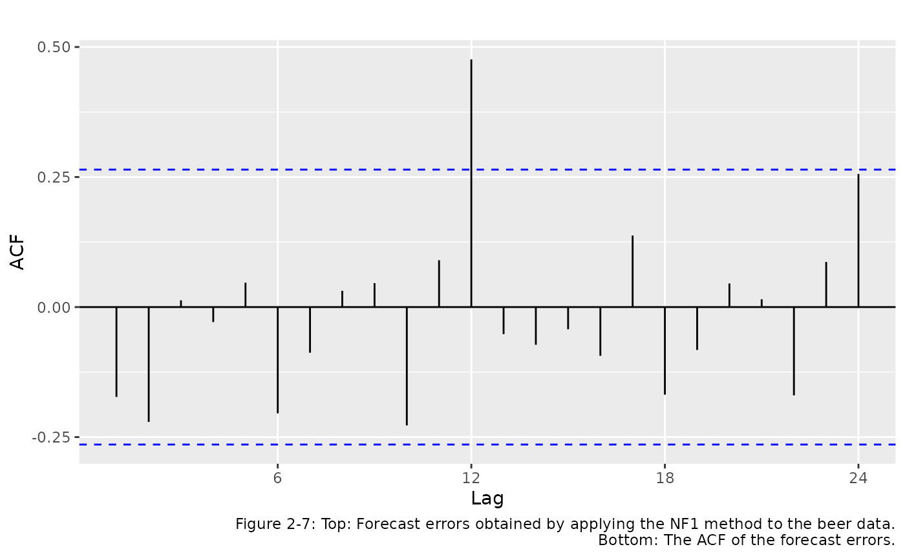
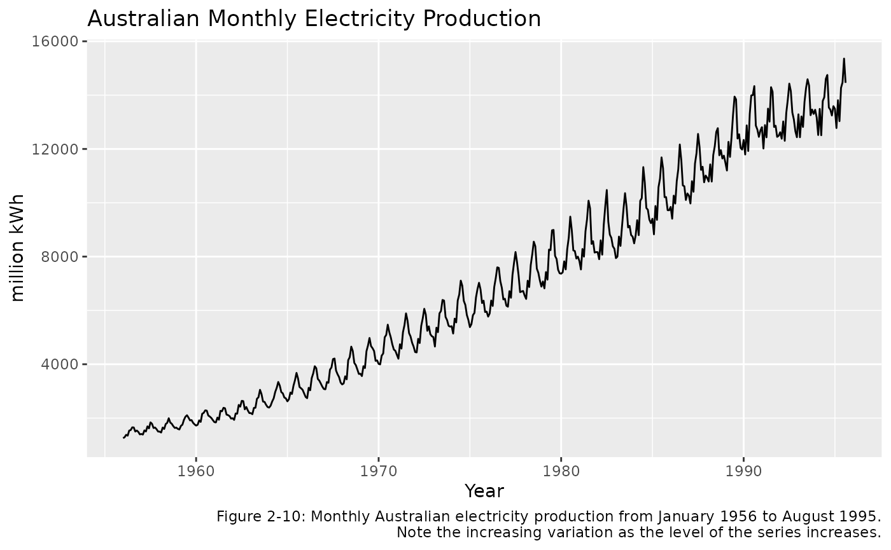
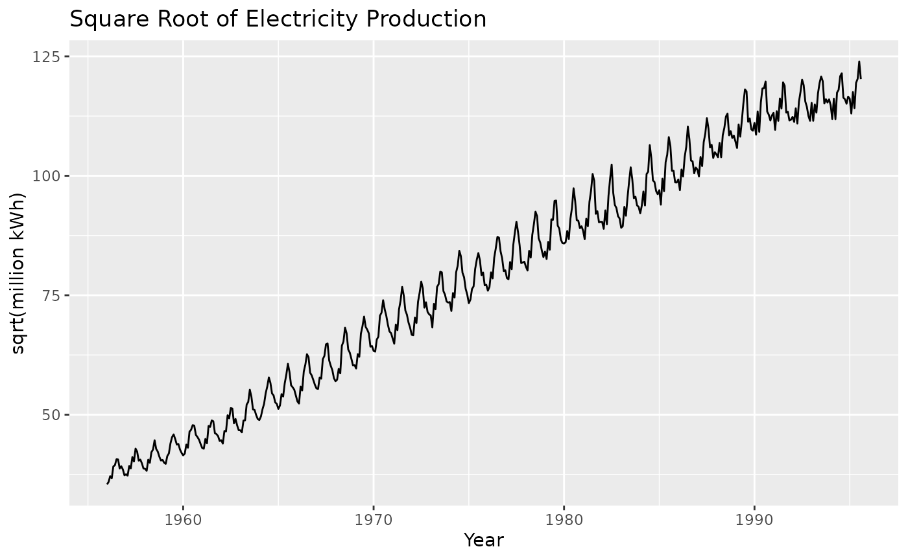
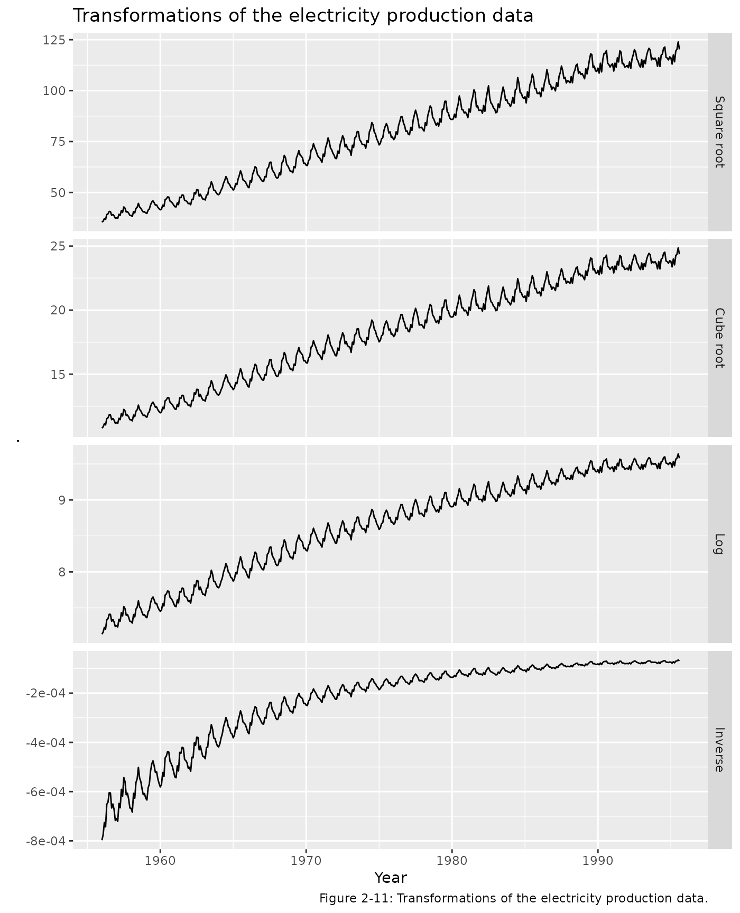
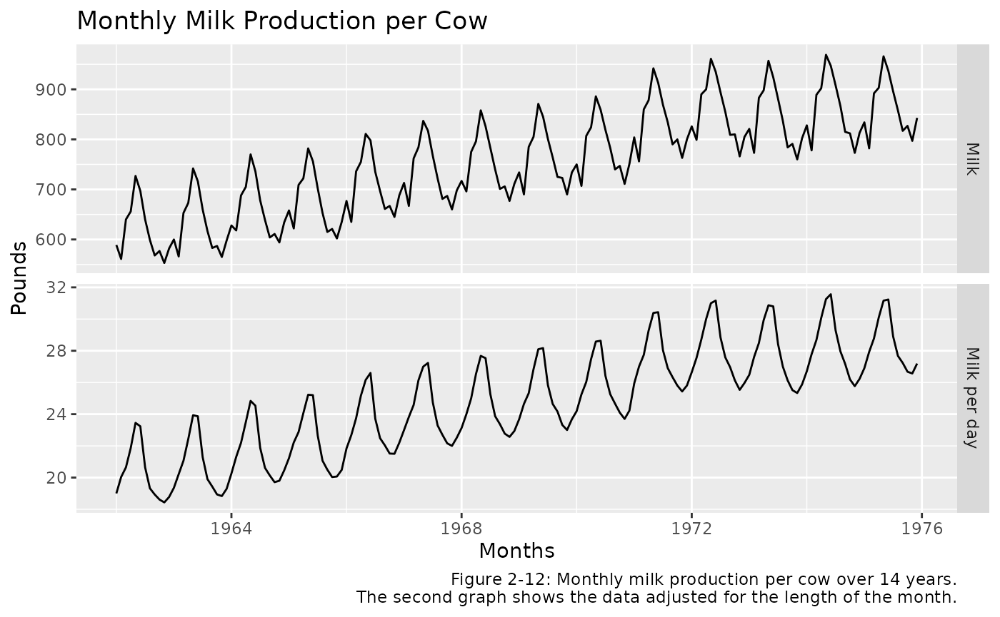

Using fma: worked examples
Justin Carmody, Rob J Hyndman
2023-02-18
Source:vignettes/fma-vignette.Rmd
fma-vignette.RmdIntroduction
This package contains a collection of datasets that are designed to accompany the textbook “Forecasting: Methods and Applications” by Makridakis, Wheelwright & Hyndman (Wiley, 3rd ed., 1998). The book can be purchased here.

When the fma package is loaded, the
forecast package is also loaded, providing the functions to
fit models and compute forecasts.
This vignette will give a brief introduction to the ways in which the
datasets in the fma package can be analysed using the
forecast package. Most of the figures from Chapter 2 are
reproduced here. The figure numbers used here correspond to figures in
the textbook.
Data sets
There are a number of data sets that are included in the
fma package, which are referenced in examples throughout
the book. Descriptions of the data sets that are used in this vignette
are included below:
-
auto Cross-sectional data for 45 automobiles from Consumer Reports, April 1990, pp. 235-255. Columns:
- Model: The name of the automobile
- Country: The country of origin of the automobile
- Mileage: The mileage of the automobile (in miles per gallon)
- Price: The price of the car (in $US)
beer Monthly time series data for Australian beer production (in megalitres) from January 1991 to August 1995.
elec Monthly time series data for Australian electricity production from January 1956 to August 1995 in kWh.
milk Monthly time series data for milk production per cow (in pounds) over a 14 year time period.
Graphical summaries
The single most important thing to do when first exploring the data is to visualize it through graphs. The basic features of the data, including patterns and unusual observations, are most easily seen through graphs. Sometimes graphs also suggest possible explanations for some of the variation in the data.
Chapter 2 describes three main types of graph that are useful for forecasting. R code that can be used to reproduce these examples will be shown below.
Time plots and time series patterns
For time series data the most obvious graphical form is a time plot (in which the data are plotted over time). A time plot immediately reveals any trends over time, any regular seasonal behavior, and other systematic features of the data.
Figure 2-1 below shows a time plot of the beer data. This reveals the range of the data and the time at which peaks occur, the relative size of the peaks and the randomness in the time series.
beer %>%
autoplot() +
ggtitle("Monthly Australian Beer Production") +
xlab("Year") +
ylab("Megalitres") +
labs(caption = "Figure 2-1: Time plot of monthly Australian beer production (megaliters, Ml) from January 1991–August 1995.")
Seasonal plots
For time series data that have seasonal patterns, it is often useful
to also produce a seasonal plot. This consists of the data
plotted against the individuals “seasons” in which the data were
observed. This is something like a time plot except that the data from
each season are overlapped. A seasonal plot enables the underlying
seasonal pattern more obvious, as well as more easily identify
deviations from this pattern. Figure 2-2 shows a
seasonal plot of the beer data.
This can be done using the ggseasonplot() function from
the forecast package:
ggseasonplot(beer, col = rainbow(5), year.labels = TRUE) +
ggtitle('Monthly Australian Beer Production') +
xlab('Months') + ylab('Megalitres') +
labs(caption = 'Figure 2-2: A seasonal plot of the Australian beer production data. Note that production peaks in
November and December in preparation for the southern hemisphere summer and is least in winter.')
Scatterplots
Time plots and seasonal plots are not appropriate for cross-sectional
data. Patterns in these data can be readily visualised with
scatterplots. Scatterplots help to visualise the
relationships between variables of interest in a data set.
Figure 2-3 shows a plot of two variables from the
auto data set.
auto %>%
ggplot(aes(x = Mileage, y = Price)) +
geom_point() +
xlab("Mileage (mpg)") + ylab("Price ($US)") +
ggtitle("Price/Mileage Relationship for 45 Automobiles") +
labs(caption = 'Figure 2-3: A scatterplot of price versus mileage for the automobile data.')
The auto data also has an additional explanatory
variable Country. It is a categorical variable so
cannot be plotted against Price in the same way as the
continuous Mileage variable. However, we can include
the Country information in our scatterplot with a shape
aesthetic. This is displayed in Figure 2-4 below.
auto %>%
ggplot(aes(x = Mileage, y = Price, shape=Country)) +
geom_point(size=2) +
xlab("Mileage (mpg)") + ylab("Price ($US)") +
ggtitle("Price/Mileage Relationship for 45 Automobiles") +
labs(caption = 'Figure 2-4: A scatterplot showing price, mileage, and the country of origin for the automobile data.')
Numerical summaries
In addition to graphics, it is also helpful to provide numerical summaries. A summary number for a data set is called a statistic.
Univariate statistics
Table 2-4 shows the computation of some useful
univariate statistics for the Mileage variable in the
auto dataset, after filtering the data set to only include
cars from Japan. These statistics are defined and explained in the
textbook. The following code produces these summary statistics:
auto_japan <- auto %>%
filter(Country == 'Japan')
auto_japan
#> Model Country Mileage Price
#> 6 Mazda MPV V6 Japan 19 14944
#> 7 Nissan Van 4 Japan 19 14799
#> 9 Acura Legend V6 Japan 20 24760
#> 11 Mitsubishi Wagon 4 Japan 20 14929
#> 12 Nissan Axxess 4 Japan 20 13949
#> 13 Mitsubishi Sigma V6 Japan 21 17879
#> 14 Nissan Stanza 4 Japan 21 11650
#> 16 Mazda 929 V6 Japan 21 23300
#> 23 Nissan Maxima V6 Japan 22 17899
#> 27 Toyota Cressida 6 Japan 23 21498
#> 29 Nissan 240SX 4 Japan 24 13249
#> 31 Subaru Loyale 4 Japan 25 9599
#> 33 Mitsubishi Galant 4 Japan 25 10989
#> 37 Honda Prelude Si 4WS 4 Japan 27 13945
#> 38 Subaru XT 4 Japan 28 13071
#> 40 Mazda Protege 4 Japan 32 6599
#> 43 Honda Civic CRX Si 4 Japan 33 9410
#> 44 Subaru Justy 3 Japan 34 5866
#> 45 Toyota Tercel 4 Japan 35 6488Table 2-4
auto_japan %>%
summarise(mean = mean(Mileage),
median= median(Mileage),
MAD = sum(abs(Mileage - mean(Mileage)))/n(),
MSD = sum((Mileage - mean(Mileage))^2)/n(),
Variance = var(Mileage),
Std_Dev = sd(Mileage))
#> mean median MAD MSD Variance Std_Dev
#> 1 24.68421 23 4.371191 27.05817 28.5614 5.344287Bivariate statistics
This section introduces the concepts of covariance,
correlation and auto-correlation.
Table 2-6 below shows the calculation of these
bivariate statistics for the auto data with
Country == "Japan" (the same data used in Table
2-5). The variables being considered are Price
and Mileage. For this section the units of
Price will be converted to thousands of dollars.
Calculation of these statistics is given below:
Table 2-6
auto_japan %>%
mutate(Price = Price/1000) %>%
summarise(mean_milage = mean(Mileage),
mean_price = mean(Price),
sd_mileage = sd(Mileage),
sd_price = sd(Price),
covariance = cov(Price, Mileage),
correlation = cor(Price, Mileage))
#> mean_milage mean_price sd_mileage sd_price covariance correlation
#> 1 24.68421 13.93805 5.344287 5.400006 -21.00154 -0.7277246Autocorrelation
The covariance and correlation coefficient are statistics that measure the extent of the linear relationship between two variables and can be used to identify explanatory relationships. Autocovariance and autocorrelation are comparable measures that serve the same purpose for a single time series.
For example, if we compare \(Y_t\) (the observation at time \(t\)) with \(Y_{t−1}\) (the observation at time \(t−1\)), then we see how consecutive observations are related. The observation \(Y_{t−1}\) is described as lagged by one period.
Together the autocorrelations at lags 1, 2, …, make up the autocorrelation function or ACF. It is much easier to understand the autocorrelations by plotting them against the lag. This plot is known as a correlogram. Figure 2-6 shows the ACF for the beer data:
ggAcf(beer) +
ggtitle('ACF of Beer Production') +
labs(caption = 'Figure 2-6: The correlogram (or ACF plot) for the beer production data.')
Forecast accuracy
In this section of the book, a variety of measures of forecasting (or
modelling) accuracy are defined. Functions from the
forecast package can be used to calculate these accuracy
measures.
The textbook refers to a simple forecasting method called Naive Forecast 1 (NF1) which is used as a benchmark against which to compare more sophisticated methods. This method uses the most recent observation available as a forecast. Table 2-11 shows NF1 used to forecast the monthly beer production for the year of 1995.
window(beer, start=c(1994,12)) %>%
naive() %>%
accuracy()
#> ME RMSE MAE MPE MAPE MASE ACF1
#> Training set -3.625 25.28587 22.125 -3.724331 15.88498 NaN -0.3339436It can be helpful to look at the autocorrelations in forecast errors. Figure 2.7 shows the forecast errors obtained by applying the NF1 method to the Australia monthly beer data.
beer %>% naive() %>% residuals() -> e
autoplot(e) + ggtitle("Errors from NF1 forecasts")
ggAcf(e) + ggtitle("") +
labs(caption="Figure 2-7: Top: Forecast errors obtained by applying the NF1 method to the beer data.
Bottom: The ACF of the forecast errors.")
Transformations and adjustments
Sometimes adjusting the data will lead to a simpler and more interpretable forecasting model. This section of the book deals with three kinds of adjustments. Examples of each are given below:
Mathematical transformations
Figure 2-10 below shows a plot of the
elec data set.
elec %>%
autoplot() +
ggtitle("Australian Monthly Electricity Production") +
xlab("Year") + ylab("million kWh") +
labs(caption = "Figure 2-10: Monthly Australian electricity production from January 1956 to August 1995.
Note the increasing variation as the level of the series increases.")
This time plot shows that the size of the annual seasonal variation increases as the level of the series increases. The variation at the start (towards the left) is about 300 million kWh, while in more recent years (to the right) the variation exceeds 2500 kWh. A mathematical transformation is a convenient method for the necessary task of including this increasing variation into the forecasts for this data.
One possible transformation is the square root function. This transform is plotted below:
elec %>%
sqrt() %>%
autoplot() +
ggtitle("Square Root of Electricity Production") +
xlab("Year") + ylab("sqrt(million kWh)")
So we can see that this transformation has helped in reducing the variation in the seasonal cycles. This will make the forecasting task easier than the un-transformed data shown in Figure 2-10.
There are a number of other useful transformations. One of the most common is the logarithm, as it is relatively easy to interpret. Section 2/7 of the textbook gives the formulation for the set of power transformations. The plots below show a selection of these transformations.
cbind(
`Square root` = sqrt(elec),
`Cube root` = elec^(1/3),
`Log` = log(elec),
`Inverse` = -1/elec) %>%
autoplot(facet=TRUE) +
xlab("Year") +
ggtitle("Transformations of the electricity production data") +
labs(caption="Figure 2-11: Transformations of the electricity production data.")
Calendar adjustments
Some of the variation in a time series may be due to the variation in the number of days (or trading days) each month. It is a good idea to adjust for this known source of variation to allow study of other interesting features.
Month length can make quite an impact since number of days in a month can differ by (31-28)/30 = 10%. If this is not removed, seasonal patterns become hard to interpret. Section 2/7/2 in the textbook shows how to make this adjustment.
Figure 2-12 shows the milk data set
with and without being adjusted for month length. The simpler pattern
will lead to better forecasts and easier identification of unusual
observations.
cbind(
Milk = milk,
`Milk per day` = milk/monthdays(milk)
) %>%
autoplot(facet=TRUE) +
ggtitle("Monthly Milk Production per Cow") +
xlab("Months") + ylab("Pounds") +
labs(caption="Figure 2-12: Monthly milk production per cow over 14 years.
The second graph shows the data adjusted for the length of the month.")